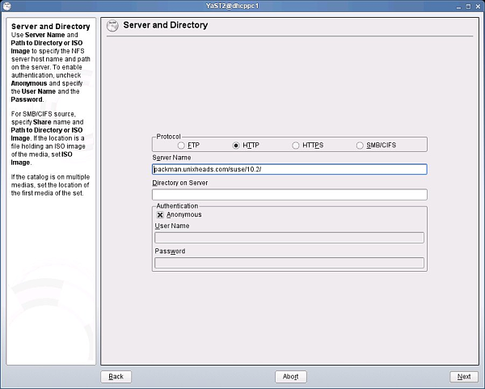

| [ << ] | [ >> ] | [Top] | [Contents] | [Index] | [ ? ] |
This is the general contents of all Cinelerra packages.
Cinelerra is demanding on all PC subsystems, as reading, decoding and playing video can be quite taxing. Thus, performance and usability of Cinelerra are directly proportional to the video format (SVCD/DV/HDV/HD/etc) used and the CPU and I/O bus speeds and video and memory bus architecture of your hardware. Therefore, it stands to reason that a less powerful system will be sufficient for users working with audio only or lower resolution video formats. However, that same system may slow down considerably when playing back a higher resolution format, such as DV video. Effects and several tracks of audio will compound these problems. Given these constraints, here are some suggestions for running Cinelerra:
To install Cinelerra you should have a current version of GNU/Linux with the X Window System (e.g., X.org) and some audio management software properly running. You should also have the following libraries installed (partial list):
You will also need the headers for all required libraries. For many distributions, this means that you will need to install the "-dev" or "devel" packages that correspond to your installed library packages. In addition to the libraries listed here, be sure you have the X library headers. Missing headers will usually result in compilation failing with cryptic error messages.
You can install Cinelerra CV by fetching the source code and compiling it. That is the method to use if you want to compile the most up-to-date version of Cinelerra CV.
The source code of Cinelerra-CV is available from a Subversion (SVN) repository. Subversion is available for download at http://subversion.tigris.org/, but most likely your distribution has prebuilt packages. Complete documentation of subversion is available at http://svnbook.red-bean.com/nightly/en/index.html.
svn checkout svn://svn.skolelinux.org/cinelerra/trunk/hvirtualcd hvirtual
autoreconf -i --force
./configure --with-buildinfo=svn/recompile./configure --helpmakemake 2>&1 | tee logfile
sudo make install
ldconfig
Notes:
./configure
with the ‘--enable-mmx32’ option. If you do that, you may have to use the
‘--without-pic’ option too, otherwise, compilation may fail.
./configure --prefix=/usr --enable-x86 --enable-mmx32 --enable-freetype2
--with-buildinfo=svn/recompile CFLAGS='-O3 -pipe -fomit-frame-pointer
-funroll-all-loops -falign-loops=2 -falign-jumps=2 -falign-functions=2
-ffast-math -march=pentium-m -mfpmath=sse,387 -mmmx -msse'
./autogen.sh./configuremakemake installsvn updatesvn checkout -r <revision>
svn://svn.skolelinux.org/cinelerra/trunk/hvirtual
./configure (replace ‘xxx’ by the number of the revision you
are compiling):cd /usr/local_cinelerra/rxxx./cinelerra_rxxxWhen Cinelerra CV crashes, one can compile it with debugging symbols and run it inside gdb. The information displayed by gdb is far more detailed and will help CV developers find bugs faster.
First, fetch the SVN sources as usual. Then, run the following commands:
cd hvirtual
nice -19 autoreconf -i --force
mkdir ../hvdbg
cd ../hvdbg
nice -19 ../hvirtual/configure CXXFLAGS='-O0 -g' CFLAGS='-O0 -g'
--with-buildinfo=svn/recompile
cd quicktime/ffmpeg
nice -19 make CFLAGS='-O3'
cd ../..
nice -19 make
nice -19 make install
See section Reporting bugs, for information about running Cinelerra inside gdb.
The simplest way to run Cinelerra is by running /usr/bin/cinelerra
Command line options are also available by typing cinelerra -h These
options are described in several sections below. For rendering from the
command line See section Rendering files.
If you get this error message when running Cinelerra for the first time:
WARNING:/proc/sys/kernel/shmmax is 0x2000000, which is too low
See section Freeing more shared memory, for details.
You can try and use Cinelerra on a computer without having to install it on your system. This is possible by using Live CDs, that are GNU/Linux distributions which boot from a CD, without installation on a hard drive. Here are some of the Live CD’s known to contain Cinelerra:
Cinelerra CV is included in the Arch Linux community repository.
To install the cinelerra package enable the community repository first
(See http://wiki.archlinux.org/index.php/AUR_User_Guidelines for more
info).
Then run the following command from the command line:
pacman -Sy cinelerra-cv
Cinelerra CV is included in the Ark Linux package repository.
To install the cinelerra package use the Install Software tool in Mission
Control or run the following commands from a command line:
apt-get update
apt-get install cinelerra.
Andraz TORI maintains build rules for Debian Sid. He also makes binary .deb packages for Sid. They are built from the unofficial SVN releases. Debian Sid packages can be found here:
deb http://www.kiberpipa.org/~minmax/cinelerra/builds/sid/ ./
deb http://www.kiberpipa.org/~minmax/cinelerra/builds/pentium4/ ./
deb http://www.kiberpipa.org/~minmax/cinelerra/builds/pentiumm/ ./
deb http://www.kiberpipa.org/~minmax/cinelerra/builds/athlonxp/ ./
Valentina MESSERI built also
deb http://giss.tv/~vale/debian64/ ./
Christian MARILLAT makes binary Debian packages, built from the unofficial SVN releases, for stable, testing and unstable.
deb http://www.debian-multimedia.org BRANCH main
Note: BRANCH = stable, testing or unstable
Note: Install debian-multimedia-keyring to add in your keyring Marillat’s
gpg-key.
Note: If Cinelerra produces the following error:
cinelerra: relocation error: /usr/lib/libavcodec.so.0.4.8: undefined symbol:
faacDecOpen
You can solve the problem by entering the following command as root:
apt-get install --reinstall libfaad2-0=2.0.0-0.5
Standard development packages
These are packages which might be considered "standard" development pacakges. The chances are, though, that you wouldn’t have them installed by default, so you will probably need them:
error: X11/extensions/xf86vmode.h: No such file or directory
error: X11/extensions/Xvlib.h: No such file or directory
/usr/bin/ld: cannot find -lXxf86vm
Extra Debian packages
These are development packages which are "non-standard", and you’ll almost certainly have to install them if you want to compile Cinelerra:
Some packages which may or may not be required:
External packages
You need some prerequisites which are not found in Debian’s official
repositories. You should add in your ‘/etc/apt/sources.list’ the following
line, which is Christian Marillat’s repository:
deb http://www.debian-multimedia.org/ sid main
You will need to apt-get install the following packages:
Chose a repository from the ones above according to your release and CPU type
and install the package.
Here are 3 ways of doing that:
With Synaptic Package Manager (recommended):
Open the Software Sources Window.
You can do it in two ways:
- Go to System -> Administraton -> Software Sources
- Inside Synaptic Package Manager: Go to Settings -> Repositories.
Make sure you have universe, multiverse and restricted sources checked in the
first tab.
Click on tab Third Party. Click on the Add button and enter:
ppa:cinelerra-ppa/ppa
Clicking Add Source will display the new repository enabled in the Software
Sources window.
You should now see Cinelerra in the list of packages available in Synaptic.
Follow Synaptic instructions for installation.
With the command line:
Edit directly your ‘/etc/apt/sources.list’ file.
Make sure you have universe, multiverse and restricted sources enabled by checking
you have the following line uncommented:
deb http://ppa.launchpad.net/cinelerra-ppa/ppa/ubuntu <RELEASE> main
where <RELEASE> is your installed version of Ubuntu (precise, trusty, etc).
Add the complete APT line of your chosen repository.
Install Cinelerra by typing in your terminal:
apt-get update
and then
apt-get install cinelerra
With GDebi Package Installer:
Send Firefox to the web address of the repository
(e.g. http://www.kiberpipa.org/~muzzol/cinelerra/edgy-i386/.)
Click on the .deb link for your chosen Cinelerra package
(e.g. cinelerra_2.1.0+svn20070109-0ubuntu1_i386.deb)
A dialog window will ask you to confirm your intention to open this file with
GDebi Package installer.
Clicking OK will start the download.
If during the process you get errors about not satisfiable dependencies, try
installing the problematic library with the same method from the same webpage.
HOWTOs for package installation or compilation from source code
Installation for Gentoo GNU/Linux is very straight forward. Simply type:
emerge cinelerra-cvs
as root and it should install and run without any problems. Note that you may need to put cinelerra-cvs in your ‘/etc/portage/package.keywords’ file in order to unmask it:
echo "=media-video/cinelerra-cvs ~x86" >> /etc/portage/package.keywords
See http://www.gentoo.org/doc/en/handbook/handbook-x86.xml?part=3&chap=3 for details. If you are running on an architecture other than x86 e.g. amd64, you will need to replace ~x86 with the relevant architecture e.g. ~amd64.
You may also want to adjust the USE flags. First run
emerge -av cinelerra-cvs
to see what flags are available and then add the relevant ones to
‘/etc/portage/package.use’:
echo "media-video/cinelerra-cvs ieee1394" >> /etc/portage/package.use
This would enable support for firewire devices.
Cinelerra is included in the Freshrpms repository at http://freshrpms.net. The easiest way to install packages from Freshrpms is to include the repository in the yum configuration. Also make sure that the Fedora Extras repository is enabled. This is the case by default on Fedora 5 and 6, and Core and Extras are merged into one on Fedora 7.
For Fedora 8 see http://kernelreloaded.blog385.com/index.php/archives/install-cinelerra-on-fedora-8/
On Fedora 6, as the user root do:
rpm -ivh http://ftp.freshrpms.net/pub/freshrpms/fedora/linux/6/\ freshrpms-release/freshrpms-release-1.1-1.fc.noarch.rpm
On Fedora 5, do:
rpm -ivh http://ftp.freshrpms.net/pub/freshrpms/fedora/linux/5/\ freshrpms-release/freshrpms-release-1.1-1.fc.noarch.rpm
Then type:
yum -y install cinelerra
to get and install Cinelerra and all the dependencies, including ffmpeg and mjpegtools. If it does not work, check the ‘/etc/yum.conf’ file and make sure that the Freshrpms config gets included from the ‘/etc/yum.repos.d’.
Notes:
Cinelerra packages for Mandriva are made by PLF are ready to install. Read http://plf.zarb.org/packages.php for more information.
Rafael DINIZ build Slackware packages for Cinelerra.
RPMs for SuSE 9 are built from SVN sources by Kevin BROSIUS, and available at http://cin.kevb.net/files/RPM/
RPMs for OpenSUSE 10.1 and 10.2, architecture i586 and x86_64, are built from SVN by Leon FREITAG at Packman. They are available at http://packman.links2linux.org/package/cinelerra/16413.
The RPM package(s) can be installed as root in a terminal using this command:
rpm -Uvh package_name.rpm
The following installation case shows four screenshots for a GUI based Cinelerra SVN installation on OpenSUSE 10.2 i586 using YaST2. First by adding packman’s YaST2 repository as a YaST2 Installation source, and next the package installation with the YaST2 Software Manager.
Start the YaST Control center on OpenSUSE 10.2 and add the root password when requested:

Start the YaST2 installation source tool, select the HTTP protocol and add the servername for packman as shown. Synchronization with Zenworks may take some time, wait until it is finished.
Start the YaST2 Software Management. Enter "Cinelerra" in the left search field and next check the checkboxes for the Cinelerra packages in the right window. If an older version of Cinelerra is installed on beforehand visible with a lock symbol, delete it, possibly try an update first.

Click Accept to start the package installation and afterwards Next to finish.

FIXME
| [ << ] | [ >> ] | [Top] | [Contents] | [Index] | [ ? ] |
This document was generated on May 12, 2015 using texi2html 5.0.